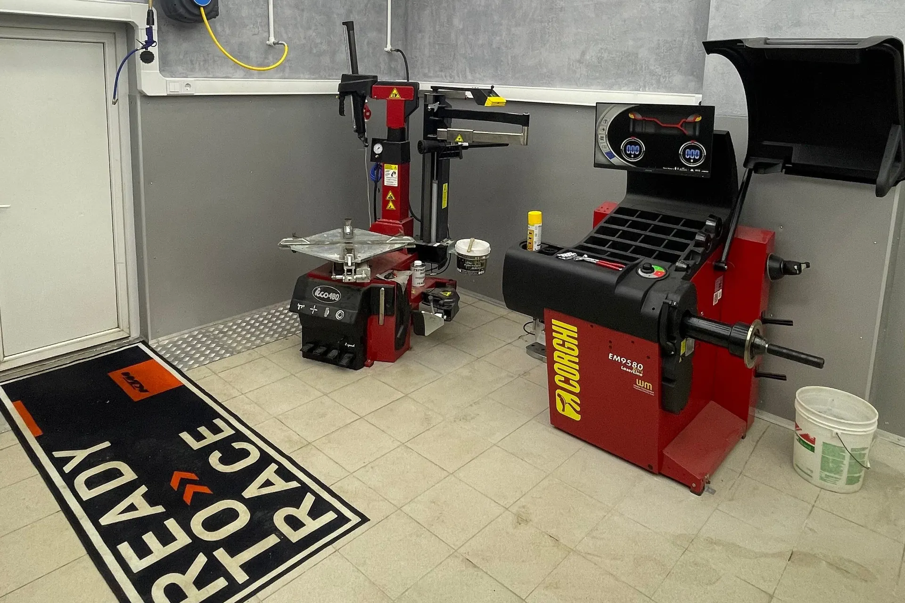
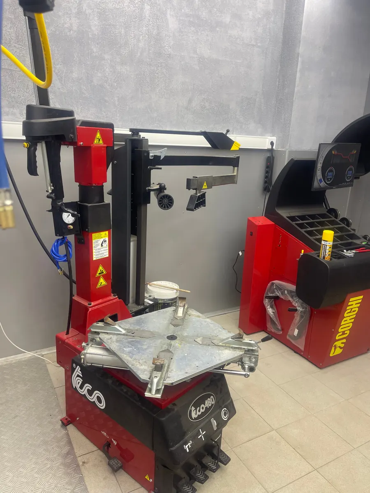
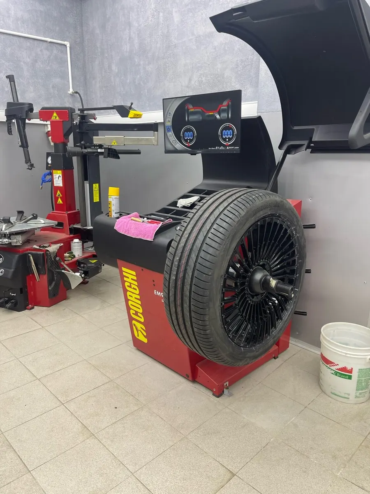
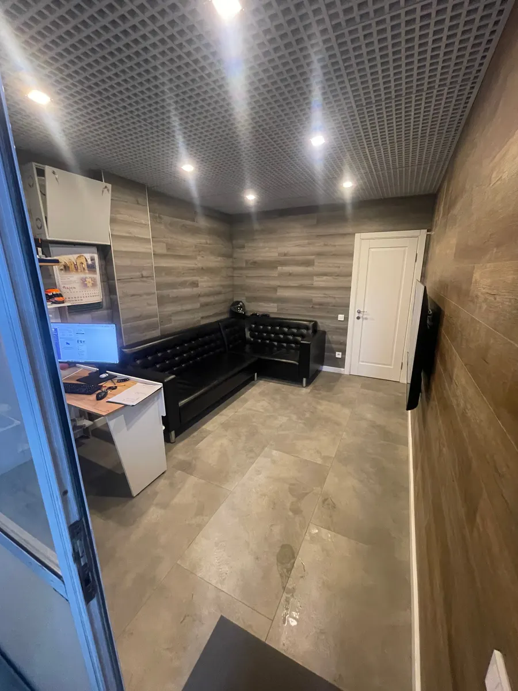

Шиномонтаж · метро Новокузнецкая
Шиномонтаж в центре Москвы – переобуем и помоем за один заезд
Большая Татарская, 7, корп. 2, подземный паркинг. Итальянские станки, тёплый бокс, приём по записи.
- Пн–пт 09:00–21:00, сб–вс 10:00–20:00
- Запись в Telegram и по телефону
- Оплата картой, наличными или по СБП

Цены
Шиномонтаж считаем за колесо. Сумму за комплект под ваш радиус и машину назовём при записи.
Шиномонтаж, за одно колесо
- Легковая машина700 ₽
- Внедорожник1 300 ₽
- Доплата за RunFlat250 ₽
- Доплата за профиль 45 и ниже150 ₽
Ремонт шин и дисков
- Заплатка500 ₽
- Жгут700 ₽
- Кордовая заплатка800 ₽
- Ремонт бокового пореза1 500 ₽
- Правка литого диска1 000 ₽
- Прокатка штампованного диска500 ₽
- Порошковая покраска дисковуточнить
Хранение и мойка
- Хранение колёскомплект, 4 штуки1 500 ₽ в месяц
- Мойка одного колеса250 ₽
- Мойка авто800 ₽
- Комплексная мойка1 500 ₽
Как проходит
- 01
Пишете в Telegram или звоните
Называете радиус, тип шин и удобное время.
- 02
Заезжаете в подземный паркинг
Большая Татарская, 7, корп. 2. На въезд нужен пропуск – закажите его при записи.
- 03
Снимаем и разбираем колёса
Работаем на итальянских станках, в том числе с низким профилем и RunFlat.
- 04
Балансируем и ставим на место
Подождать можно в комнате с диваном и Wi-Fi. После шиномонтажа машину можно сразу помыть.



За чем к нам едут
С большими колёсами и низким профилем
В отзывах пишут, что здесь взяли R21 с RunFlat, от которого отказались в других сервисах.
За колёсами и мойкой сразу
Шиномонтаж, мойка, химчистка и детейлинг в одном месте.
Ко времени, по записи
Назначаем время заранее, чтобы вы не ждали в очереди.
Отзывы с Яндекс.Карт
«Был на шиномонтаже, ребята все сделали на отлично, многие не брались у меня 21 радиус низкой профиль ранфлет. Всё сделали профессионально,оборудование у ребят итальянское профессиональное. Рекомендую!»
сергей с. · 15 июня 2026
«Большое спасибо компании и Стасу в особенности, в субботу утром спустило колесо в ноль, ребята откликнулись, дали с собой компрессор, чтобы смог доехать до них. Быстро нашли прокол, поставили заплатку. Всё качественно. Рекомендую! В данной локации сложно найти адекватный шиномонтаж.»
Анатолий Никонов · 10 октября 2026
«Приехал по Яндексу на шиномонтаж и был приятно удивлен , качеством работ и в особенности новым современным оборудованием . Били в руль колеса , заезжал на другие сервисы в округе , никто не сделал , эти справились на отлично. РЕКОМЕНДУЮ шиномонтаж!!!!»
Алексей Смирнов · 30 июня 2026
Отзывы с карточки на Яндекс.Картах, без правок.
Частые вопросы
Как вас найти?
Большая Татарская улица, 7, корп. 2, метро Новокузнецкая. Въезд в подземный паркинг, внутри – неоновая вывеска. На въезд нужен пропуск – закажите его при записи.
Берёте низкий профиль и RunFlat?
Да. Доплата за RunFlat – 250 ₽, за профиль 45 и ниже – 150 ₽.
Можно оставить колёса на хранение?
Да, хранение комплекта из четырёх колёс стоит 1 500 ₽ в месяц.
Можно заодно помыть машину?
Да, мойка работает здесь же: мойка авто – 800 ₽, комплексная – 1 500 ₽.
Нужно ли записываться?
Лучше записаться заранее: напишите в Telegram или позвоните.
Запишитесь на удобное время
- Адрес
- Большая Татарская, 7, корп. 2, подземный паркинг, Москва
- Часы
- Пн–пт 09:00–21:00, сб–вс 10:00–20:00
- Телефон
- +7 (495) 668-08-33